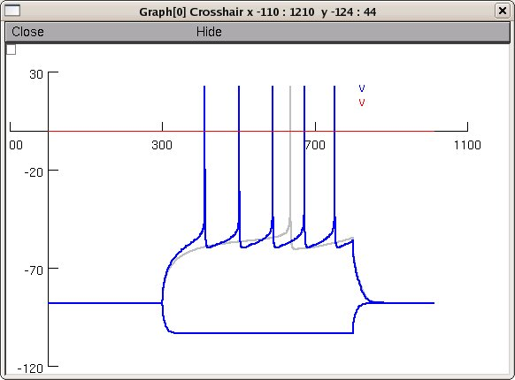

Reproduces all simulations from: Steephen, J. E., & Manchanda, R. (2009). Differences in biophysical properties of nucleus accumbens medium spiny neurons emerging from inactivation of inward rectifying potassium currents. J Comput Neurosci doi:10.1007/s10827-009-0161-7 This implementation by John Eric Steephen (johneric@iitb.ac.in) to whom questions should be addressed. Usage: Auto-launch from ModelDB and skip to step 4 or 1. Unzip MSN2009.zip into an empty directory. 2. Compile the mod files with mknrndll (or nrnivmodl in unix). 3. Double click on main.hoc (or drag and drop onto nrngui (MAC), or start with "nrngui main.hoc" (unix/linux)). 4. A window with the title Control Panel will appear with several controls, one of which will be the "Help" button. Click the "Help" button to see instructions on how to reproduce the simulations described in the paper. Example: After right clicking on the graph and selecting "Keep lines" follow the instructions in the "Help" panel to recreate figure 1B from the paper: 